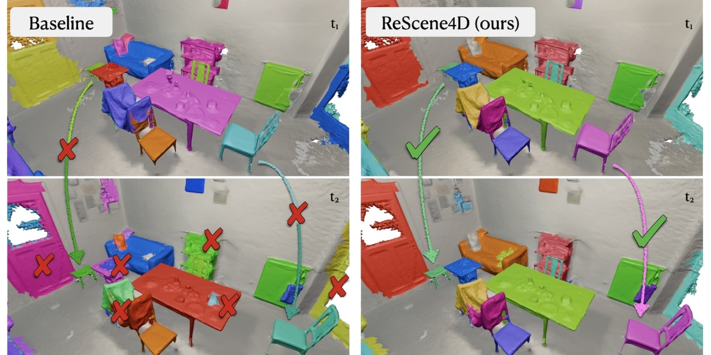
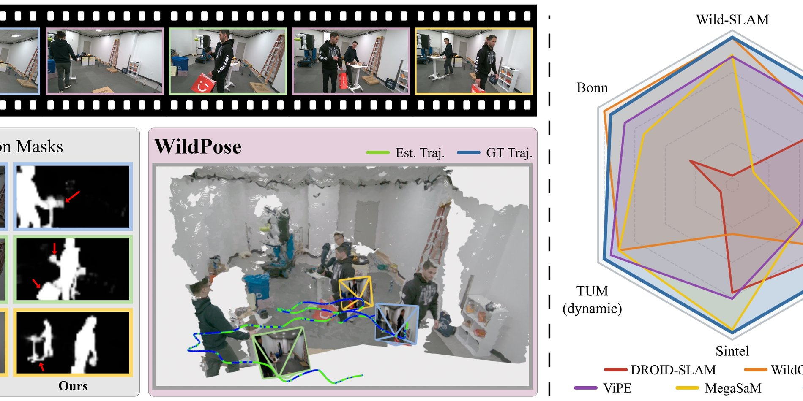
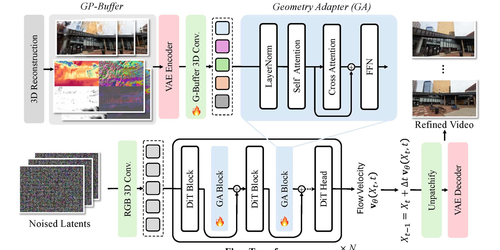

Three papers accepted to CVPR 2026
Selected work spans dynamic indoor scenes, robust pose estimation, and in-the-wild 3D reconstruction.
Stanford Civil & Environmental Engineering
We study how real-world visual data can help design, construct, and understand adaptive spaces that move between the physical and digital world.


About
Gradient Spaces develops quantitative methods for environments that blend real reality, mixed reality, and virtual reality. The lab works across visual data, 3D understanding, design, construction, and human experience.
Our research spans dynamic 3D scene understanding, in-the-wild reconstruction, mixed reality, and sustainable built environments — with open datasets, code, and benchmarks released alongside our publications.
News
Selected work spans dynamic indoor scenes, robust pose estimation, and in-the-wild 3D reconstruction.
Tao Sun, Iro Armeni, and collaborators were recognized for work on evolving 3D scenes.
GuideFlow3D and Rectified Point Flow join the lab's growing archive of spatial AI work.
Research

CVPR 2026
Temporally consistent semantic instance segmentation for evolving indoor 3D scenes.

CVPR 2026
A unified framework for robust pose estimation in unconstrained visual settings.

CVPR 2026
Geometry-informed video generation for stronger 3D reconstruction in the wild.
Connect